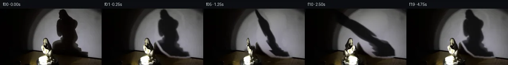

![首帧]()

Round 00
2026-11-05T01:07:24.368706+00:00像素候选变化代码 +275/−0inspection 更新
pixels c89e1e7c9708d0ca · code 5da2b44ae89d7db3
查看本轮 generate.py 真实 diff
--- previous/generate.py +++ current/generate.py @@ -0,0 +1,275 @@ +#!/usr/bin/env python3 +"""Generate a deterministic 20-frame 2.5D continuation from first_frame.png. + +The supplied photograph is decomposed locally into a static illuminated set, +the porcelain foreground, its cast shadow, and subtle platform texture. No +external imagery, model, or engine is used. +""" + +from pathlib import Path + +import cv2 +import numpy as np +from PIL import Image, ImageDraw + +import artifact_io + + +ROOT = Path(__file__).resolve().parent +H, W = 144, 256 +FPS = 4 + + +def poly_features(x, y, degree=5): + """Low-order bivariate basis for the smooth wall illumination.""" + cols = [] + for total in range(degree + 1): + for px in range(total + 1): + py = total - px + cols.append((x ** px) * (y ** py)) + return np.stack(cols, axis=-1) + + +def fitted_wall(first): + """Estimate the unoccluded wall under the shadow with robust ridge fits.""" + yy, xx = np.mgrid[:H, :W] + # Wall/table edge measured from the first frame. + wall = yy < (104.5 + 0.090 * xx) + lum = first.mean(axis=2) + # The center stripe holds both the porcelain and the cast shadow. Fit from + # the clean left and far-right portions of the same spotlight pool. + blocked = ((xx > 128) & (xx < 225)) | ((xx > 91) & (xx < 137) & (yy > 65)) + train = wall & ~blocked & (lum > 18) + train &= ((xx % 2) == 0) & ((yy % 2) == 0) + xn = (xx - 146.0) / 110.0 + yn = (yy - 58.0) / 75.0 + A = poly_features(xn[train], yn[train], 5) + # Tiny ridge term makes the extrapolation across the blocked stripe stable. + ridge = 2e-3 * np.eye(A.shape[1], dtype=np.float64) + full_A = poly_features(xn.ravel(), yn.ravel(), 5) + pred = np.empty((H, W, 3), np.float32) + for c in range(3): + b = first[..., c][train] + coef = np.linalg.solve(A.T @ A + ridge, A.T @ b) + pred[..., c] = (full_A @ coef).reshape(H, W) + pred = np.clip(pred, 0, 255) + + # A small amount of fixed, band-limited grain avoids a synthetic flat patch. + rng = np.random.default_rng(8401) + grain = rng.normal(0, 1.0, (H, W)).astype(np.float32) + grain = cv2.GaussianBlur(grain, (0, 0), 0.45) + pred += grain[..., None] * np.array([1.0, 0.95, 0.9], np.float32) + return np.clip(pred, 0, 255), wall + + +def decompose(first): + """Return clean background, object alpha, and source shadow alpha.""" + first_f = first.astype(np.float32) + yy, xx = np.mgrid[:H, :W] + wall_pred, wall_domain = fitted_wall(first_f) + + # Shadow footprint: polygon only limits detection; opacity comes from the + # measured deficit relative to the fitted unoccluded spotlight. + shadow_region = np.zeros((H, W), np.uint8) + shadow_poly = np.array( + [[143, 0], [181, 0], [203, 18], [207, 47], [198, 66], + [213, 97], [221, 121], [178, 124], [153, 105], [136, 78]], + np.int32, + ) + cv2.fillPoly(shadow_region, [shadow_poly], 255) + L0 = first_f.mean(axis=2) + Lp = wall_pred.mean(axis=2) + deficit = np.maximum(0.0, Lp - L0) + ratio_alpha = np.clip(deficit / np.maximum(Lp - 2.0, 18.0), 0.0, 0.97) + ratio_alpha *= (shadow_region > 0) & wall_domain & (deficit > 5.0) + # Preserve fine silhouette structure but give the physical penumbra a soft edge. + shadow_alpha = cv2.GaussianBlur(ratio_alpha.astype(np.float32), (0, 0), 0.85) + shadow_alpha = np.clip(shadow_alpha, 0.0, 0.96) … diff truncated; 188 more lines …